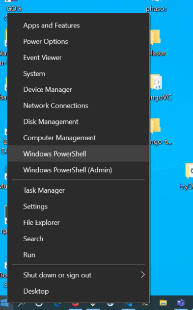
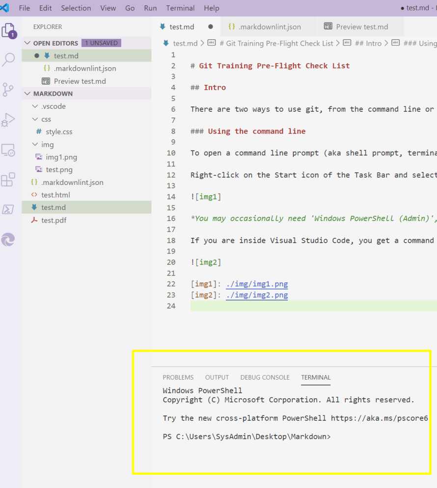
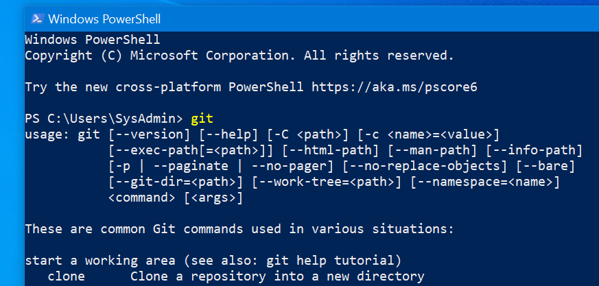

Git Training Pre-Flight Check List
Intro
There are two ways to use git, from the command line or from something with more integrated GUI support such as Visual Studio Code.
Using the command line
To open a command line prompt (aka shell prompt, terminal window) from the Windows desktop do this:
Right-click on the Start icon of the Task Bar and select 'Windows PowerShell'.[^1]

[^1]:You may occasionally need 'Windows PowerShell (Admin)', but typically only to install software from the command line
If you are inside Visual Studio Code, you get a command line (open a terminal window) by typing Ctrl-Shift-@, seen here in the bottom-right pane, marked with a yellow rectangle.

Testing that git is installed
Type 'git' at the command line prompt.

If it is installed you will get a help message, as above. If it is not you will get an error, usually some flavour of 'Unrecognized Command'.
If you need to install git
The one-stop shop is Git For Windows. Download and run the installer.
Do I need Visual Studio Code (VSC)
Need? No. But it is nice to have and relieves your memory of the burden of remembering some common git commands.
If VSC is installed you can find it by Search or by looking in the Start Menus. You can also type code . at a command prompt which will open it at the current folder.
If you want to install Visual Studio Code
Head to Download Visual Studio Code.
You will want the 64 bit User Installer unless you know better.[^2]
[^2]:The User installer installs just for the current user. The System installer installs for everyone, but requires admin rights.
Once again, just run the installer and let it finish.